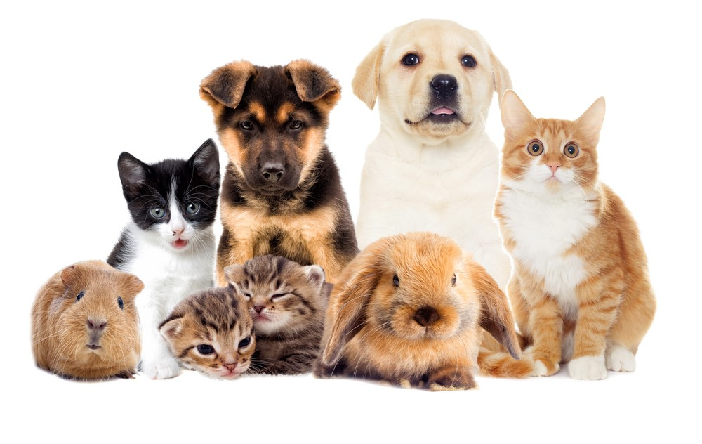

Los animales de compañía son seleccionados por su comportamiento, adaptabilidad y por su interacción con los humanos, en la que posiblemente se utilicen como herramientas de caza o seguridad. Poseer un animal de compañía puede traer beneficios a la salud, ya que el cuidado diario hace olvidar a muchas personas otro tipo de preocupaciones, evita la depresión y nos hace sentir útiles.
El animal de compañía también se caracteriza por ser amigable. Se puede decir que la mayoría de estos animales se convierten en domésticos si la persona con la que conviven les enseña buenos modales en la convivencia diaria, no olvidando su naturaleza animal. Un animal de compañía se adapta al ambiente de un ser humano sin importar su naturaleza: se adhiere a un grupo, familia o sociedad, la cual le dota de todo lo necesario para su desarrollo. En adaptabilidad y comportamiento, se dice que los perros como animales de compañía, superan a la mayoría.
Su adaptabilidad ha ayudado al hombre en diversos ámbitos sociales, culturales y recreativos, como en su uso terapéutico en hospitales, como guías de personas ciegas, como apoyo policial, y en complicados rescates de personas. La compañía de cualquier mascota evoca siempre ternura, compañía y amistad, cualidades que se intensifican cuando la soledad busca filtrarse en la vida de las personas; es en estos momentos cuando la mascota adquiere un papel más importante, al sentirlo parte de la familia y aún más, como un amigo. La mayoría de las personas muestran una actitud positiva a través de su relación con una mascota o animal de compañía, sobre todo aquellos que sufren problemas de tipo psicológico o físico.
Si quieres saber más, clic AQUÍ